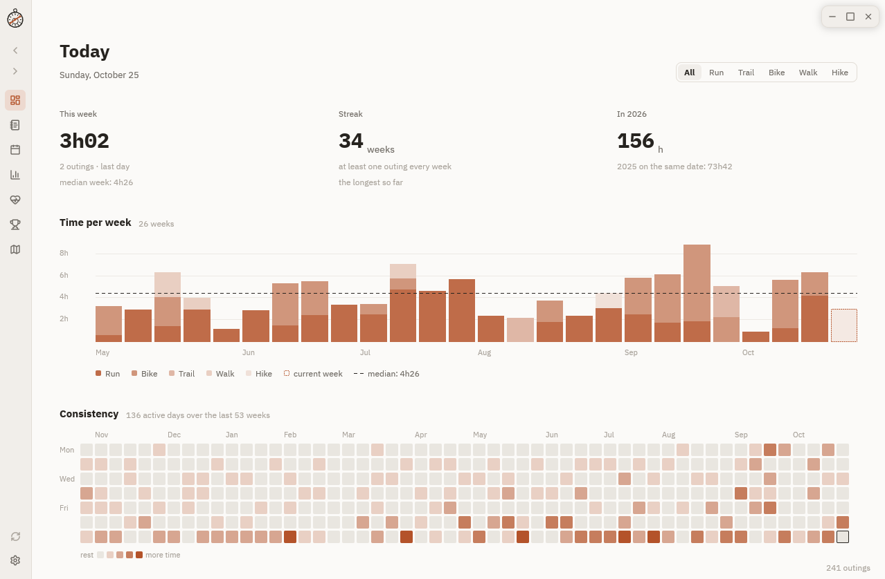

Know where you stand.Savoir où tu en es.
A desktop journal of your Garmin activities. Everything stays on your machine and opens instantly, online or not.
Le journal de tes activités Garmin, sur ton ordinateur. Tout reste chez toi et s’ouvre aussitôt, en ligne ou non.
DownloadTélécharger Free and open source · Linux, macOS, WindowsLibre et gratuit · Linux, macOS, Windows
- Everything about your outingsTout sur tes sorties Journal, calendar, maps and curves, statistics, form, records, heatmap. Journal, calendrier, cartes et courbes, statistiques, forme, records, carte de chaleur.
- Your data stay with youTes données restent chez toi It talks to Garmin and OpenStreetMap, nobody else. Your key goes to the system keyring. Il ne parle qu’à Garmin et OpenStreetMap. Ta clé va dans le trousseau du système.
- Small and fastPetit et rapide One binary in Rust, drawn on the GPU. MIT licence. Un binaire en Rust, dessiné sur le GPU. Licence MIT.
DownloadTélécharger
Windows
Installer or .zipInstalleur ou .zip · Windows 10/11. Not signed: More info → Run anyway.Windows 10/11. Non signé : Informations complémentaires → Exécuter quand même.
macOS
Disk imageImage disque · macOS 11+, Apple Silicon and Intel. Not notarized: Open Anyway in Privacy & Security.macOS 11+, Apple Silicon et Intel. Non notarisé : Ouvrir quand même dans Confidentialité et sécurité.
Arch Linux
curl -LO https://github.com/alarboulletmarin/astrolabe/releases/latest/download/astrolabe-x86_64.pkg.tar.zst
sudo pacman -U ./astrolabe-x86_64.pkg.tar.zstOther LinuxAutre Linux
Build from source with Rust (À compiler avec Rust (dependenciesdépendances).
git clone https://github.com/alarboulletmarin/astrolabe.git
cd astrolabe && make && sudo make install